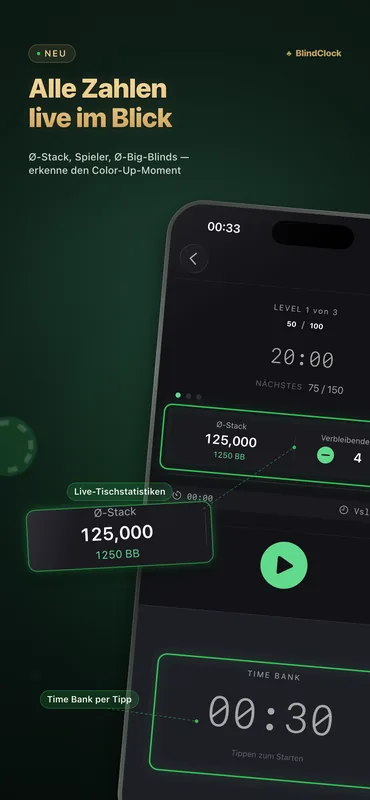
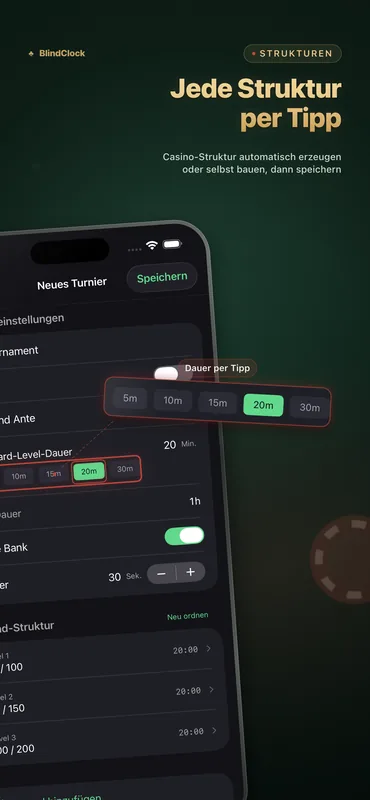
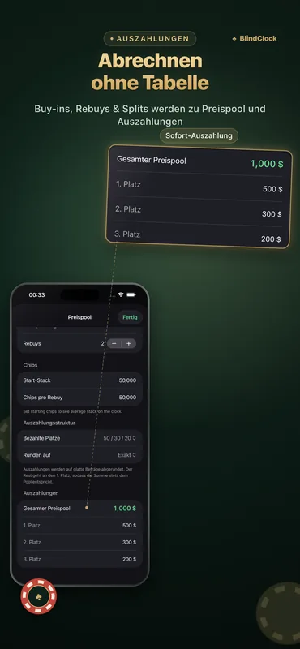

Alles, was ein Gastgeber braucht
Gemacht für Heimrunden und Club-Turniere – präzise auch bei ausgeschaltetem Bildschirm, lesbar quer über den ganzen Tisch.
Präzise Turnieruhr
Pausieren, fortsetzen oder Level überspringen. Die Uhr bleibt im Hintergrund präzise und übersteht ein erzwungenes Beenden – mach genau dort weiter, wo du aufgehört hast.
Blindstruktur-Generator
Gib Spielerzahl, Chips und gewünschte Dauer ein – und du bekommst mit einem Tipp eine saubere Struktur im Casino-Stil inklusive Pausen.
Auszahlungsrechner
Buy-ins, Rebuys und Preisaufteilungen werden sofort berechnet – am Ende des Abends abrechnen, ganz ohne Tabellenkalkulation.
Time Bank
Gib Spielern mit konfigurierbaren Time Banks zusätzliche Bedenkzeit – inklusive Warnungen und Tönen.
Live Activity & Dynamic Island
Das aktuelle Level erscheint auf deinem Sperrbildschirm und in der Dynamic Island. Auf einem ladenden iPhone macht StandBy daraus eine bildschirmfüllende Turnieruhr.
iPad-Tischanzeige
Dreh ein iPad ins Querformat für einen riesigen Countdown mit den Blinds zu beiden Seiten – der ganze Tisch erfasst ihn auf einen Blick, und der Bildschirm bleibt an.
Vorlagen teilen
Exportiere jedes Turnier als .blindclock-Datei und schick sie per AirDrop an Freunde – sie importieren deine exakte Struktur mit einem Tipp.
iCloud-Synchronisierung
Deine Turniervorlagen sind automatisch auf iPhone und iPad dabei – kostenlos für alle.
So sieht es aus



Beispiel-Blindstrukturen
So sieht eine saubere Struktur aus: Ein Turbo ist in rund 1,5 Stunden vorbei, ein normales Heimturnier in etwa 3, ein Deepstack-Event in 4,5 oder mehr. Der Generator von BlindClock baut dir mit einem Tipp eine Struktur für genau deine Spielerzahl, Chips und Zieldauer.
| Level | Turbo · 15 Min. | Standard · 20 Min. | Deepstack · 30 Min. |
|---|---|---|---|
| 1 | 25 / 50 | 25 / 50 | 25 / 50 |
| 2 | 50 / 100 | 50 / 100 | 50 / 100 |
| 3 | 100 / 200 | 75 / 150 | 75 / 150 |
| 4 | 200 / 400 | 100 / 200 | 100 / 200 |
| 5 | 300 / 600 | 150 / 300 | 150 / 300 |
| 6 | 500 / 1000 | 200 / 400 | 200 / 400 |
| 7 | — | 300 / 600 | 250 / 500 |
| 8 | — | 400 / 800 | 300 / 600 |
| 9 | — | 500 / 1000 | 400 / 800 |
| Startstack | 5,000 | 5,000 | 10,000 |
Blinds angegeben als Small Blind / Big Blind. Plane alle vier bis fünf Level eine 10-minütige Pause ein – der Generator von BlindClock setzt sie automatisch.
Zum ausführlichen Guide (Englisch): So richtest du ein Heimturnier aus →
Neu in 2.1
- Live-Tischstatistiken — den durchschnittlichen Stack, die verbleibenden Spieler und den Stack in Big Blinds – live mit jedem Level, direkt auf der Uhr.
- Erkenne den Color-Up-Moment — die Zahl, die ernsthafte Gastgeber im Blick haben: wann ein Color-Up ansteht, wann ihr über einen Deal redet, wie das Turnier wirklich läuft. Tippe, um einen Spieler auszuscheiden. Kostenlos für alle.
- Schnellerer Start & Feinschliff — ein überarbeiteter Startbildschirm und Verbesserungen in der ganzen App.
BlindClock Pro
Die kostenlose Version ist voll spielbar – Timer, Live Activity, Generator, Auszahlungen, Synchronisierung und bis zu 5 eigene Turniere. Pro hebt das Limit mit einem einzigen Kauf auf, für immer, auf all deinen Geräten.
- Unbegrenzte eigene Turniere
- Einmaliger Kauf
- Keine Werbung, kein Abo
- Auf all deinen Geräten